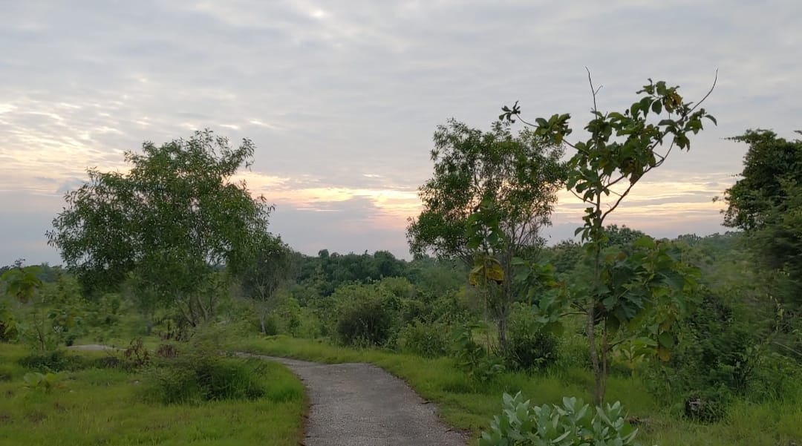
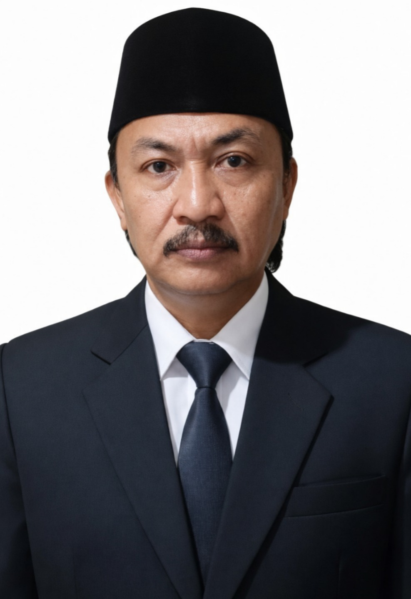

POKDARWIS PANTAI BIRU KERSIK TERIMA BANTUAN GAZEBO DARI BANK...
Kersik – Kelompok Sadar Wisata (POKDARWIS) Pantai Biru Kersik menerima bantuan 10 (sepuluh) unit gazebo dari Bank...
Sumber informasi terbaru tentang pemerintahan dan kegiatan masyarakat di Desa Brakas Dejeh.
Melalui website ini Anda dapat menjelajahi segala hal yang terkait dengan desa. Aspek pemerintahan, penduduk, demografi, potensi desa, dan juga berita tentang desa.
Assalamu Alaikum Warohmatullahi Wabarakatu.
Website ini hadir sebagai wujud transformasi Desa Brakas Dejeh menjadi desa yang mampu memanfaatkan teknologi informasi dan komunikasi, terintegrasi ke dalam sistem online. Keterbukaan informasi publik, pelayanan publik dan kegiatan perekonomian di desa, guna mewujudkan Desa Brakas Dejeh sebagai desa wisata yang berkelanjutan, adaptasi dan mitigasi terhadap perubahan iklim serta menjadi desa yang mandiri.
Terima kasih kepada semua pihak yang telah banyak memberi dukungan dan kontribusi baik berupa tenaga, pikiran maupun doa demi kemajuan Desa brakas dajah tercinta. ada semua pihak yang telah banyak memberi dukungan dan kontribusi baik berupa tenaga, pikiran maupun doa demi kemajuan Desa brakas dajah tercinta. ada semua pihak yang telah banyak memberi dukungan dan kontribusi baik berupa tenaga, pikiran maupun doa demi kemajuan Desa brakas dajah tercinta.
Struktur Organisasi dan Tata Kerja Desa Brakas Dejeh


Sistem digital yang berfungsi mempermudah pengelolaan data dan informasi terkait dengan kependudukan dan pendayagunaannya untuk pelayanan publik yang efektif dan efisien
Akses cepat dan transparan terhadap APB Desa serta proyek pembangunan
Menyajikan informasi terbaru tentang peristiwa, berita terkini, dan artikel-artikel jurnalistik dari Desa Brakas Dejeh

Kersik – Kelompok Sadar Wisata (POKDARWIS) Pantai Biru Kersik menerima bantuan 10 (sepuluh) unit gazebo dari Bank...
Kersik – Warga RT.002 Desa Kersik, Kecamatan Marang Kayu, Kabupaten Kutai Kartanegara, melaksanakan kegiatan gotong royong...
Kersik – Dalam upaya menciptakan lingkungan yang aman, tertib, dan kondusif, Ketua RT bersama warga Desa Kersik...
Lokasi dan wilayah administratif Desa Brakas Dejeh, Kecamatan Modung, Kabupaten Bangkalan, Jawa Timur